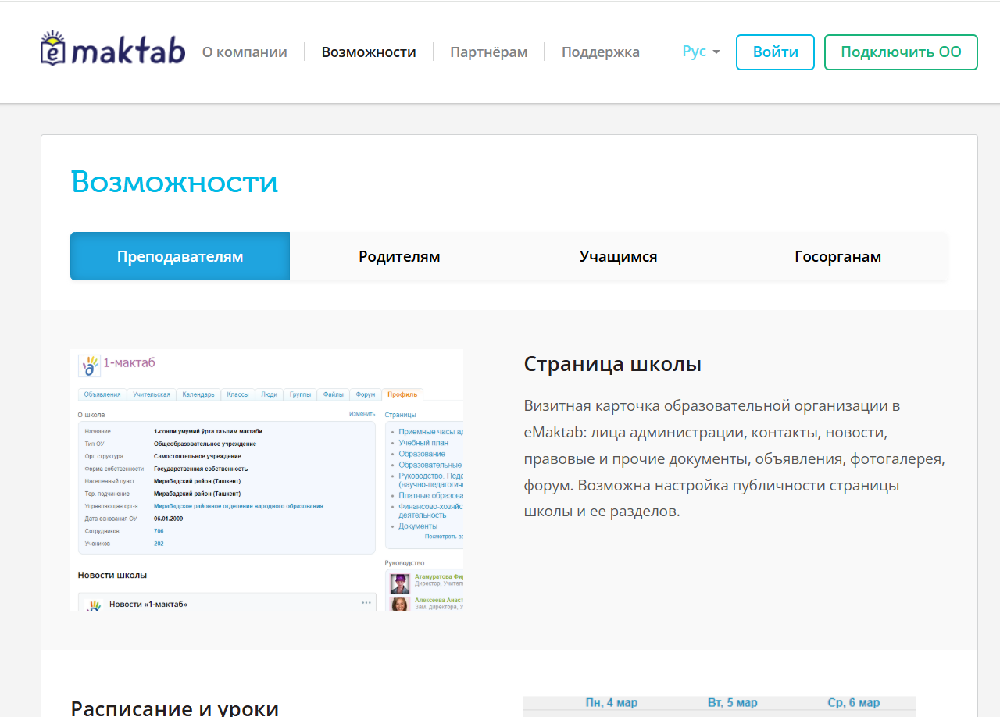

Тема 2.1. Представление об АРМ учителя
Использование АРМ в обучении позволяет повысить эффективность учебного процесса, привить у школьников навыки работы с современными технологиями и подготовить их к будущей профессиональной деятельности.
Существуют
множество примеров использования АРМ в школах, например, информационные классы,
лабораторные работы по информатике, работа завуча школы по созданию расписания
уроков, управление процессом обучения и т.д. В качестве примера мы можем
рассмотреть систему https://emaktab.uz/

Интерфейс
онлайн-сервиса eMaktab
eMaktab –
единая цифровая образовательная платформа Министерства дошкольного и школьного
образования Республики Узбекистан, предназначенная для учителей, учеников,
родителей, администраций образовательных организаций, а также представителей
органов управления образованием.
Ключевые
направления деятельности:
- Цифровизация
школьного и дошкольного образования.
- Интеграция
передовых ИКТ в образовательный процесс.
- Развитие
интерактивной коммуникации «педагог-учащийся-родитель».
- Реализация
возможностей для дистанционного и самостоятельного
образования.
- Разработка
мультисервисной онлайн-платформы eMaktab.Smart для дополнительного изучения
предметов в рамках школьной программы.
Платформа
eMaktab позволяет в онлайн-режиме составлять расписание уроков, формировать
поурочные планы учителей, вести учёт посещаемости и успеваемости учащихся в
электронных формах журнала и дневника, а также обеспечивает образовательные
организации и органы управления образованием инструментами для формирования
статистической отчетности. Для учеников и их родителей eMaktab предлагает
круглосуточный доступ к оценкам и домашним заданиям, а также доступ к
дополнительным образовательным ресурсам.
Сервисы
eMaktab также доступны в формате мобильных приложений.
Приложение
eMaktab.Jurnal для педагогов позволяет выставлять оценки, выдавать домашние
задания, отслеживать собственное расписание даже без доступа в интернет.
Подключение к интернету потребуется только перед началом рабочего дня, чтобы
загрузить актуальный журнал и расписание, а также в конце рабочего дня, чтобы
информация, которую учитель вносил в телефон на уроках, синхронизировалась с
системой. На сегодняшний день приложение скачано более 1 млн
раз.
Приложение
eMaktab.Oila для учащихся и родителей помимо стандартных опций электронного
дневника предоставляет информацию о:
- местоположении
ребенка;
- текущем
уроке;
- рейтинге
ребенка в классе по предметам;
- среднем
балле и итогах недели;
- важных
работах на завтра;
- количестве
домашних заданий на следующий учебный день.
В
общеобразовательных учреждениях АРМ классифицируются по профессиональной
направленности:
-
АРМ
учителя — используется для подготовки к урокам, ведения документации, создания
образовательных материалов.
-
АРМ
ученика — используется для выполнения заданий, поиска информации, проектной и
исследовательской деятельности.
-
АРМ
администратора — применяется для управления образовательным учреждением,
мониторинга посещаемости и успеваемости.
Пример:
АРМ учителя информатики
Учитель
информатики использует АРМ для:
·
подготовки
презентаций и тестов (Microsoft
PowerPoint,
Google
Forms);
·
ведения
электронного журнала (e-School);
·
демонстрации
учебных программ (Scratch,
Python);
· организации дистанционного обучения (Google Classroom, Zoom).